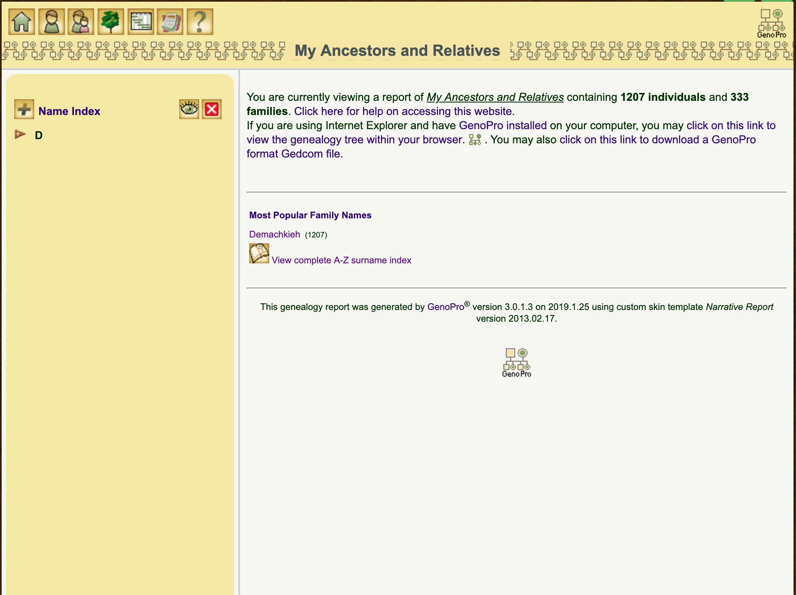
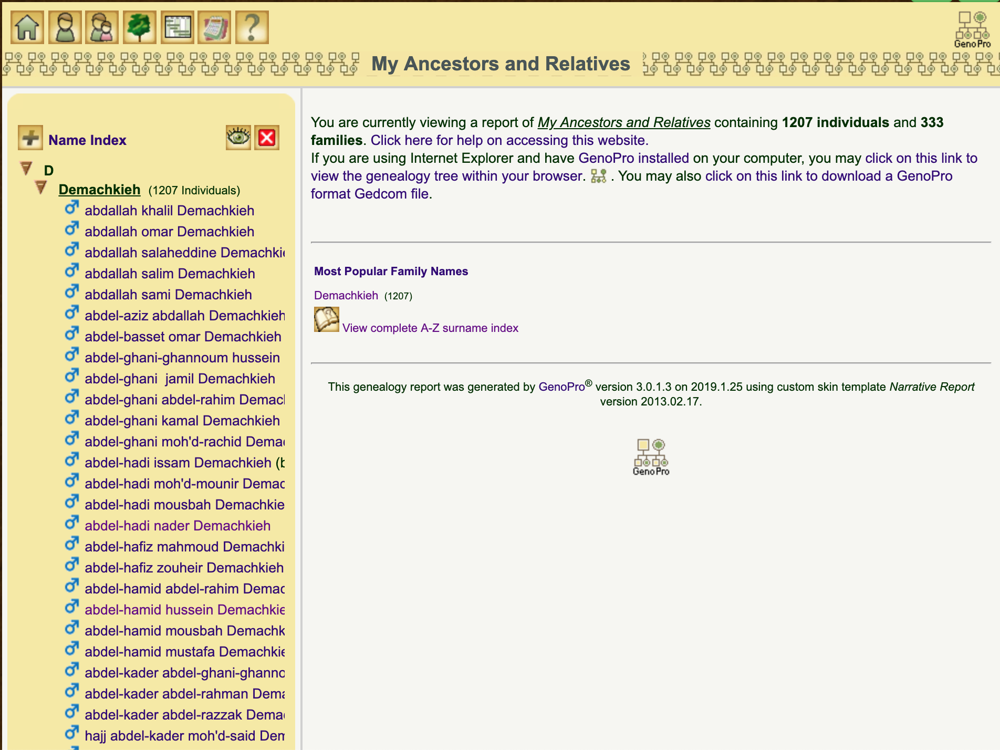
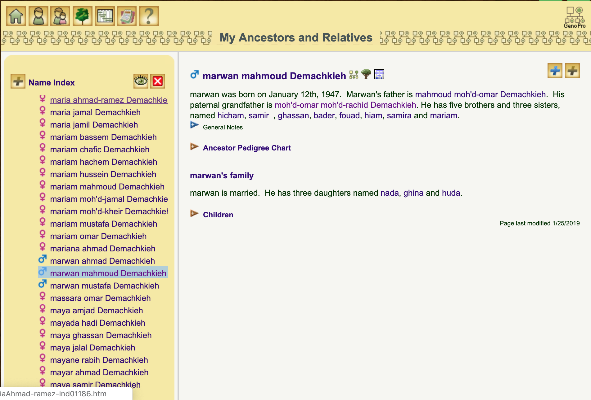
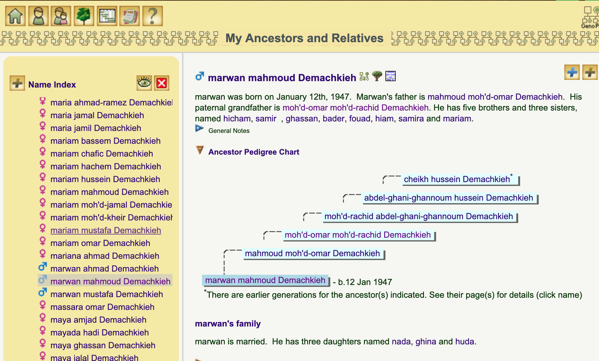
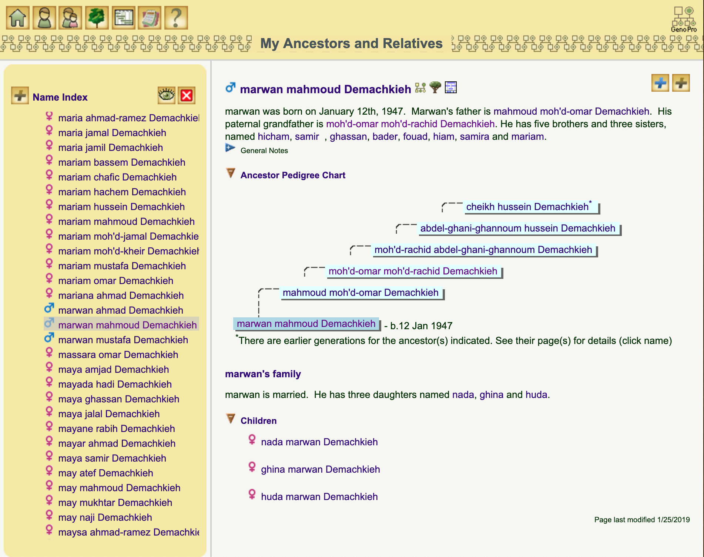
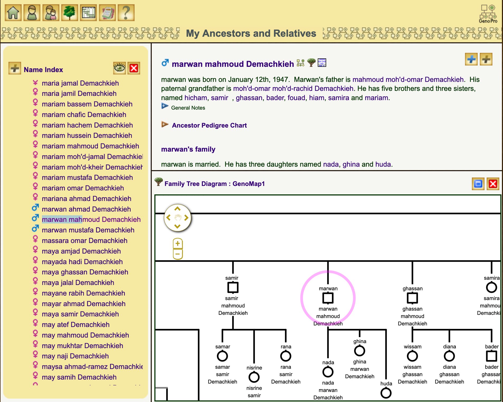
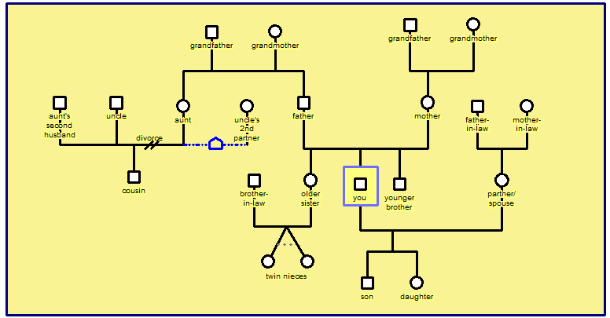

Page Layout
This page is divided into two parts: the left panel is for navigation and the right panel is for details.
Left Panel
- There is a name index on the first line and the letter “D” on the second line, click on it
- Once you see Demachkieh, click on it

- You will get a list of all names in the family tree sorted by alphabetical order starting from Abdallah and going down

- You can move the cursor down to look for a name
- For example : to look for my name 'Marwan Mahmoud Demachkieh': scroll down to letter "M", and once you find the name 'Marwan Mahmoud Demachkieh' , click on it and the right panel will show you details about me.

Right Panel
- The top part has a small bio about where the person falls in the tree
- Right under the bio, you can find the 'Ancestor Pedigree Chart', and clicking shows the pedigree chart of Marwan

- Under the chart , if you click on Marwan’s family , you will get a detail on Marwan family

- At the top of the right panel, there are 3 icons:
- icon for genealogy tree
- icon for a green tree
- icon for a rectangle
- Let us double click on green tree icon , We are always at Marwan Mahmoud Demachkieh page . We will get a part of the family genealogy tree where appears the name of Marwan surrounded by a blue circle , and under it the children of Marwan
- you will find a part of the tree where appears the person you are looking for Marwan and his children

- to the top left page , there is a big round icon containing four arrows (It is a big circle with four arrows ) : you can use the arrow to move up or down, left or right
- you can go horizontally to see my brothers and sisters , down to see my and their children, up, to see my father and uncles
- and so you can click on any name to see the tree of any person in the tree
Navigation Icons
Navigation icons are all in the top left hand corner. Hover the mouse over an icon for information on its function.
If you find yourself a little lost the Home icon will take you back to the beginning.
Perhaps the easiest way to get started is with the Family Tree diagrams. The Tree icon will take you to them.
Another way to explore is to use the Name Index which lists everyone, grouped by surname. Clicking on a person's name will bring up a page with their details.
Similarly there is a Family Index.
Family Tree Diagrams
The family tree diagrams are displayed as 'genograms' as illustrated by the example below.

Symbols
Men are represented with a square, and women usually with a circle
A cross through the symbol indicates the individual is deceased
If the year of birth and death are known the age at death will be shown in the symbol
Conventions
In a heterosexual relationship the man is placed to the left, and the woman to the right, subsequent partners of a man are drawn to the right of the previous partner and subsequent partners for a woman are drawn to the left of the previous partner. In this way, a spouse is always be closer to his/her first partner, then the second partner (if any), third partner, and so on.In the case of ambiguity, assume a male-female relationship, rather than male-male or female-female relationship
The eldest child is placed on the far left of the parents relationship line, with younger siblings being drawn sequentially to the right
For further examples and information see also 'Introduction to the Genogram'
Navigating the Tree
The family tree may have been split into several diagrams, or 'sub-trees', to make it easier to view. The diagrams may be available in two different formats. The PDF format is best for printing or in a browser without an SVG viewer option. The SVG format is interactive. Where both formats are available a button icon is provided for switching between the formats.
When using the interactive SVG format, you can click on a person's gender symbol and it will bring up a page with their details. Clicking on a relationship line will bring up a page with that family's details.
People whose names are highlighted in blue are the links between the different diagrams - you can click on their name to navigate to the next diagram.
An Individual's Page
Each individual in the report has their own page. On a person's page you will find the known details of their parents, grandparents and siblings, with hyperlnks to each, as well as pictures and any relationships.
It may also list the occupations of the individual, e.g. as recorded on census returns and other documents, as well as places of residence and educational records, timelines and ancestor charts.
Questions?
For any information, clarifications, correction, or amendment, please feel free to contact me by email or phone.
Tel. : 00 961 3 839965
Email : marwandim@hotmail.com
Best regards,
Marwan Mahmoud Dimachkie